Форекс. Свечи: Восточные сказки или Западный рационализм?

Почему нас все называют Евразией? Евразия – это когда больше Европы, чем Азии. А у нас больше Азии, чем Европы. Поэтому мы не Евразия, мы Азиопа...
Неслучайно именно эти слова из монолога М. Задорнова я привела в качестве эпиграфа к главе, посвященной свечному анализу. Потому что противостояние Европы (она же, для нас – Запад) и Азии сказывается не только на культуре, религии, воспитании и т. д., но также и на анализе графиков цен на рынке Форекс. Совместив западный подход с восточным анализом, можно получить гораздо большую уверенности при входе в сделку, чем опираясь лишь на одну из этих систем. Ведь западный рационализм, обогащенный тонким восточным лавированием, всегда окажется в более выигрышном положении. Кстати, по сравнению с другими странами у России гораздо больше возможностей для гибкого подхода. Само географическое положение нашей страны предполагает, что наше мышление настроено сразу на две волны, а как известно, наши мысли определяют наши действия.
Честно говоря, тема свечного анализа появилась неожиданно. Однажды, обсуждая стратегии ведения сделок, я разговорилась с трейдерами нашего дилинга и поинтересовалась, кто и как именно использует восточный анализ в своей аналитике. Мнения, как это ни странно, разделились. Одни категорически отрицали свечной анализ, указывая на его недостатки, другие пели оды, восхваляющие его достоинства.
Прежде всего давайте разберемся, что же такое свечной анализ, в чем его преимущества и недостатки (и есть ли они?) по сравнению с графическим анализом движения цены (то есть западным анализом). Для этого определимся в терминологии западного и восточного технического анализа.
Что же такое западный анализ?Это анализ графиков движения цены.
Западный анализ подразумевает определение:
• направления тренда;
• разворотных моментов этого тренда;
• уровней поддержки и сопротивления;
• пробития этих уровней;
и, исходя из вышеизложенного, определение точек входа и выхода из сделок.
Собственно говоря, именно западный анализ разбирали мы с вами в главах «Очевидное – невероятно» и «Открытая форточка для трейдера».
Приверженцы западной школы утверждают: «Зачем мне смотреть на свечи, если я вижу общее движение цены? Она (цена) и так дает мне информацию о направлении тренда, о разворотах движения, о формировании фигур... Свечи меня отвлекают...» Справедливости ради хочу заметить, что я сама достаточно долго думала именно так, используя исключительно западные технические инструменты.
Потом пришло увлечение свечным анализом,который еще носит название восточного.Почему его называют восточным? Отчасти потому, что его изобрели японцы. А они являются весьма влиятельными участниками большинства мировых рынков.
Я восхищаюсь, как изысканно и точно восточные философы подмечают детали бытия. Прозрачность и пластичность языка, глубина и гибкость мысли удивительным образом подкупают. Японцы – известные философы. И неудивительно, что именно они на своих далеких островах изобрели новый аналитический метод с весьма романтичным названием – японские свечи.Причем сделали это задолго до появления на Западе бирж и сопутствующим им финансовых инструментов. Свечные графики гораздо старше своих западных собратьев, что, конечно, не может не внушать доверие.
Как вы представляете себе рождественский вечер? Мягкий белый снежок, теплый уютный дом, в котором пахнет елкой и апельсинами, приятный полумрак в комнате. И конечно, зажженные свечи... Именно они придают привычной обстановке атмосферу спокойствия и таинства.
Человек часами может смотреть, не отрываясь, на дождь, воду и горящий огонь. А еще он может смотреть на то, как работают другие. Кстати, последнее утверждение, пожалуй, в трейдинге не действует. Потому что настоящие профессионалы от трейдинга предпочитают работать сами. Просто считать чужие деньги – не приучены. Привыкли считать свои.
Итак, восточный анализ –это анализ свечей.
Свеча (candelstick) – это термин для обозначения древнейшего и самого распространенного вида японского технического анализа (рис. 10.1).
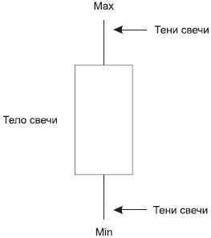
РИС. 10.1.Свеча имеет тело и тени
Толстая часть свечи называется телом. Тело – это расстояние между ценой открытия и ценой закрытия. Если цена закрытия выше цены открытия, тело свечи остается пустым. В этом случае говорят о том, что цена идет вверх. Если цена закрытия ниже цены открытия, тело свечи становится черным. В этом случае говорят о движении цены вниз (рис. 10.2). Бывают свечи без тел. У таких свечей цена открытия равна цене закрытия (или почти равна). Их называют доджи.
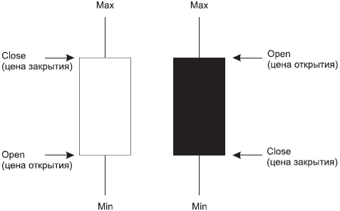
РИС. 10.2.Пустая и черная свечи
Тонкие линии выше и ниже тела свечи называют тенями. Вершиной верхней тени является максимум свечи, а низом нижней тени – минимум свечи.
Остановимся более подробно на некоторых сигналах, которые нам подают свечи.
«Доджи»«Доджи»(или «свеча равновесия») часто сигнализирует о том, что рынок находится в равновесии. Появление такой свечи на трендовом рынке часто может означать, что рынок потерял свой импульс и готов к коррекции. Конечно, только появление «доджи» не означает, что цена резко сменит направление. Шансы на разворот возрастают, если рынок находится вблизи уровня сопротивления либо поддержки (глава 4) и если рынок перекуплен или перепродан (глава 9).
Итак, если цена приблизилась к уровню поддержки или уровню сопротивления и закрылась вблизи него свечой «доджи», то, вероятнее всего, цена готовится к отскоку от этого уровня. Если при этом индикаторы зашли в зону перекупленности или перепроданности, то это еще один дополнительный сигнал на вход в рынок на отскок от уровня.
Таким образом, восточный анализ дополняет западный, что дает нам больше уверенности при входе в сделки.
Если «доджи» появился после длинной восходящей свечи,то можно говорить о том, что тени этой свечи и «свечи равновесия» образуют уровень сопротивления (рис. 10.3). От него в последующем могут начаться продажи, пусть и временные.
Если «доджи» появился после длинной нисходящей свечи,то можно говорить о том, что тени этой свечи и «свечи равновесия» образуют уровень поддержки (рис. 10.3), от которого в последующем могут начаться покупки.
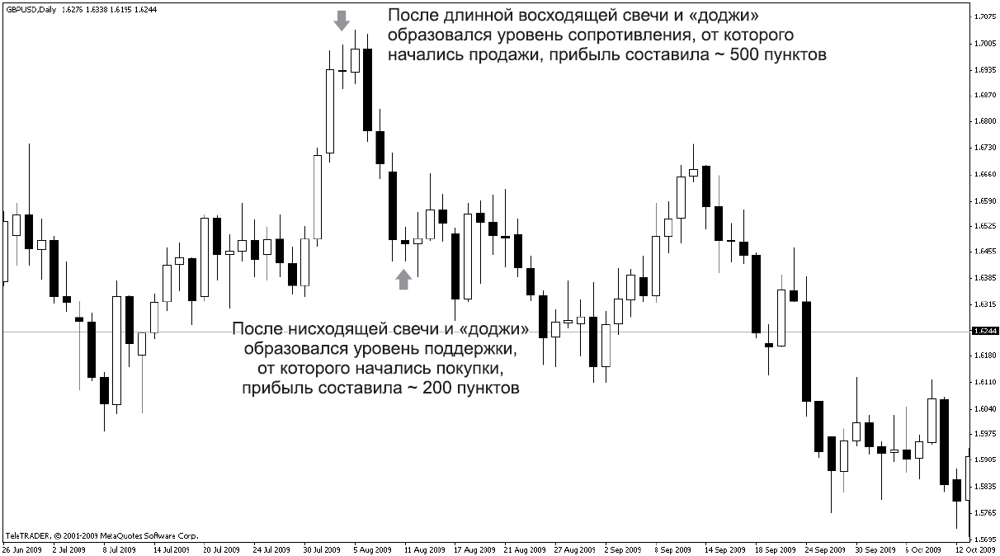
РИС. 10.3.Уровни сопротивления и поддержки
Тело свечи является своеобразным индикатором. Оно демонстрирует трейдерам уверенную направленность движения и характеризует силу тренда. Тени свечей также несут очень полезную информацию. Рассмотрим это на конкретном примере (рис. 10.4). Если белая свеча не имеет теней, то это можно рассматривать как положительный индикатор, характеризующий силу движения тренда вверх. Но, глядя на такую свечу после закрытия дня, обратите внимание на тень, которую она оставила сверху. Данная тень говорит о том, что движение вверх не смогло закрепиться и цену быстро откинули вниз от уровня сопротивления. Внимание заслуживает тот факт, что цена находилась вблизи уровня сопротивления, от которого и начались продажи. Это говорит нам о том, что у быков недостаточно сил для продолжения восходящего движения. То же самое справедливо и при нисходящем движении. Цена начинает движение вниз, но, столкнувшись с уровнем поддержки и даже «проколов» этот уровень, не может закрепиться ниже него. Внизу остаются лишь тени в виде ложных фолзов. Такое состояние рынка является переломным периодом в нисходящем движении: медведи не смогли закрепиться ниже поддержки и тем самым подтвердить свое превосходство над быками в стремлении двигать цену дальше вниз, и от поддержки начались покупки.
Рассматривая графический анализ в западном контексте, мы с вами уже разбирали модели разворота тренда в главе 4. Свечной анализ гораздо старше своего западного собрата, поэтому будет логично предположить, что в свечном анализе также существуют подобные модели разворота. Что же является разворотным сигналом в свечном анализе?Прежде всего это модели поглощения (рис. 10.5), представляющие собой совокупность двух свечей. Существует две разновидности моделей поглощения.
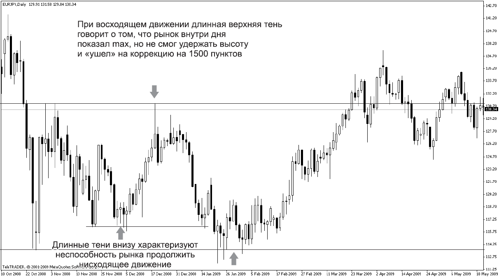
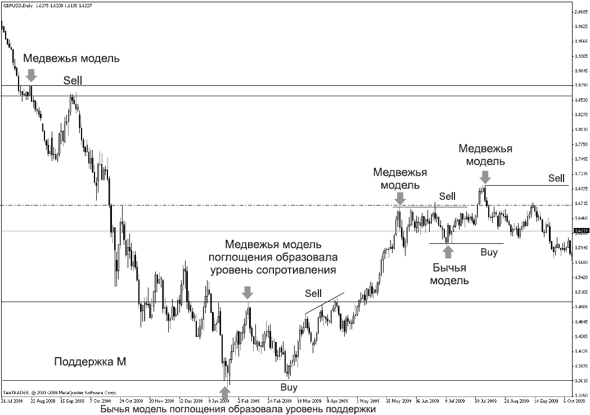
• Бычья модель– появляется при понижающем тренде, когда белое тело свечи «поглощает» черное тело. Данная модель сигнализирует о силе покупателей – их на рынке гораздо больше, чем продавцов, спрос превышает предложение.
• Медвежья модель– появляется во время восходящего движения, когда черное тело свечи «поглощает» белое тело. Эта модель сигнализирует о том, что предложение превосходит спрос.
Вы спросите: а дальше-то что? Было восходящее движение, черная свеча поглотила белую. Или наоборот, было нисходящее движение, белая свеча поглотила черную. Такое поглощение и является сигналом разворота. А когда же вставать в сделку?
Методика очень проста: при бычьей модели в качестве уровня поддержки используется меньший из двух минимумов, а при медвежьей модели в качестве линии сопротивления выбирается большая из двух вершин.
? РАЗГОВОР ТРЕЙДЕРОВ-НОВИЧКОВ
(из цикла «Невыдуманные истории»)
– Вы используете свечной анализ при планировании сделок?
– Да, конечно.
– А что для вас является сигналом на вход в рынок?
– Я смотрю, какое тело у свечи: если оно черное, то я продаю, а если белое – покупаю...
– А на каком периоде вы рассматриваете свечи?
– На минутных графиках...
Сказать, что услышанный разговор ввел меня в ступор, – это ничего не сказать. Такое понимание свечного анализа может слишком дорого стоить трейдерам.
Рынок любит простые решения, но не примитивные.
Как же воспользоваться сигналом единичной свечи и сформулировать правила торговли на основании этих сигналов? В первую очередь следует остановиться на свечных моделях, обеспечивающих видение всей рыночной картины.
Наиболее полную информацию о сложившейся на рынке ситуации несут свечи, сформированные на больших периодах(месяц, неделя, день, 4-часовой таймфрейм). Чем короче рассматриваемый период, тем больший процент погрешности закладывается при входе в сделку. Обратите внимание: необходимо рассматривать сформировавшиеся свечи, которыеуже имеют цену открытия, цену закрытия, максимум и минимум, а не те, которые находятся в процессе движения!Это одно из основных правил, используемых на рынке.
Теперь перейдем к сигналам, которые необходимо анализировать с помощью единичных свечей. Остановимся на свечах, которые имеют длинную верхнюю (нижнюю) тень при маленьком теле, расположенном у верхней (нижней) границе ценового диапазона сессии.
? КРАТКАЯ СПРАВКА
Свеча «Молот»– длинная нижняя тень и цена закрытия около или строго на максимуме.
Свеча «Падающая звезда»– длинная верхняя тень и маленькое тело, расположенное около нижней границы ценового диапазона сессии.
Свеча «Повешенный»– очень длинная тень снизу, маленькое тело (черное или белое) около верхней границы ценового диапазона сессии и короткая (или отсутствующая) верхняя тень. Эта свеча похожа на «Молот», но «Молот» появляется при нисходящем движении рынка, а «Повешенный» появляется при восходящем движении рынка.
Будем рассматривать модели свечей в общей картине рынка. Как говорится, из песни слов не выкинешь.
«Молот»Свеча «Молот» (рис. 10.6) – индикатор разворота наверх,но лишь при наличии нисходящей тенденции.Необходимое условие при образовании такой свечи – сигнала на покупку – серьезный спад или перепроданный рынок. Следует учитывать, что после образования «Молота» рынок часто совершает откат к области поддержки, которую образует тень этой свечи. Кто-то из трейдеров сразу после образования «Молота» встает на покупку, кто-то, более консервативный, ждет, пока цена снова протестирует образованный ею уровень поддержки, и только тогда от этого уровня выставляет ордер на покупку. Выбор зависит от вашей решительности и темперамента. На рис 10.7 цена демонстрирует нам классический «Молот». Длинная нижняя тень отражает решительность быков, сумевших так высоко поднять цены с минимумов сессии. Последующий откат уперся в поддержку «Молота», оперся на нее и «спружинил» вверх, давая возможность всем желающим присоединиться к восходящему движению и заработать около $3500.
Рассмотрим эту же ситуацию с точки зрения западного анализа движения цен – построим трендовую линию поддержки. Прямая строится по двум точкам, и, когда цена приходит к этой линии третий раз, следует отскок от нее (глава 4) – ведь от поддержки самые «шоколадные» покупки (рис. 10.8).
Западный и восточный анализ дополняют друг друга. Согласитесь, когда вас приглашают на покупку сразу два сигнала, то вход в сделку становится очевидным.
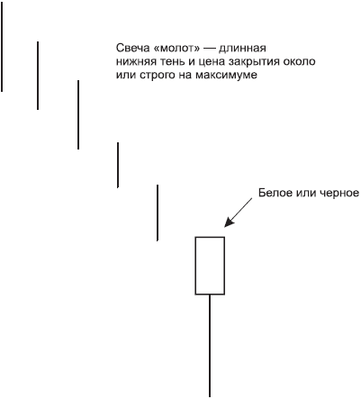
РИС.10.6. «Молот»
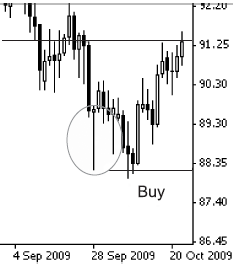
РИС. 10.7.«Молот» – индикатор разворота наверх
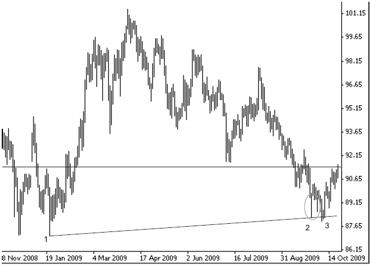
РИС. 10.8.Покупка на отскоке
«Падающая звезда»
Свеча «Падающая звезда» – индикатор разворота на низ,ее длинная тень сверху сигнализирует о том, что медведи сумели переломить восходящую тенденцию и откинули цену с максимумов. Необходимые условияиспользования такой свечи как сигнала на продажу – предшествующий ее образованию перекупленный рыноки направленное движение вверх.
Рассмотрим график движения цены пары EUR/ USD. При направленном восходящем движении рынок закрыл день моделью «Падающая звезда», сигнализировав о том, что быки не смогли удержать цену закрытия вблизи достигнутого максимума (рис. 10.10). При этом рынок оказался в зоне перекупленности, что также сигнализирует о том, что цена готова снизиться. Выставлять сделку на продажу можно после образования «Падающей звезды» или после повторного тестирования образованного ценой уровня 1,5900. Нетерпеливые трейдеры выставляют свои сделки сразу после образования данной модели, а более консервативные ждут возврата к уровню сопротивления и от него выставляют ордер на продажу.
Рассмотрим эту же ситуацию с точки зрения западного анализа (рис. 10.11). Цена пробивает трендовую линию поддержки и закрывает под ней несколько периодов, а затем делает возврат к этой линии уже как к сопротивлению. Именно эта область сопротивления наиболее привлекательна для продаж (см. главу 4). Внимательные трейдеры, рассматривая только такие простейшие дневные сигналы, заработали за три дня около $3000.
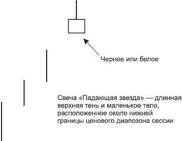
РИС. 10.9.«Падающая звезда»
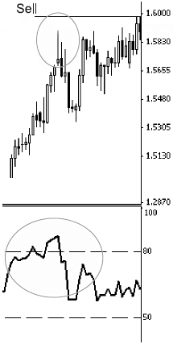
РИС. 10.10.Быки не смогли удержать цену закрытия
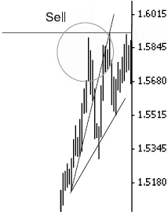
РИС. 10.11.Сигнал на продажу
«Повешенный»
Свеча «Повешенный» – это сигнал разворота на вершине,который должен появиться во время подъема.Ввести в заблуждение может длинная нижняя тень свечи, которая, казалось бы, говорит об активности покупателей, но столь сильное падение в ходе сессии демонстрирует неустойчивость рынка. Малое тело «Повешенного» свидетельствует о том, что восходящая тенденция, на вершине которой появилась эта модель, возможно, находится на переломе. Важный сигнал на разворот рынка вниз – появление следующей медвежьей свечи, особенно если эта медвежья свеча закрылась ниже тела «Повешенного», подтвердив свое намерение идти вниз (рис. 10.13). Если же такого сигнала не последовало и рынок закрыл следующую сессию выше тела «Повешенного», то мы не можем рассматривать эту модель как сигнал на продажу (рис. 10.14).
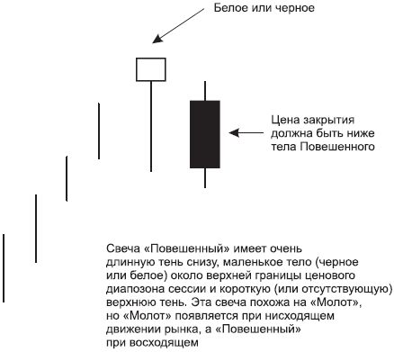
РИС. 10.12.«Повешенный»
Для того чтобы использовать модель «Повешенный» в качестве сигнала на продажу, необходимо выполнение следующих условий:
• появление этой модели на восходящем движении;
• маленькое тело (черное или белое), расположенное у верхнего ценового диапазона сессии;
• длина нижней тени обычно превосходит длину тела в три и более раза;
• верхняя тень отсутствует или очень мала;
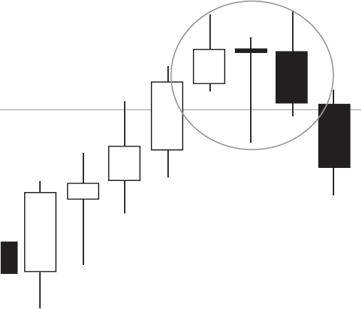
РИС. 10.13.Медвежья свеча закрылась ниже тела «Повешенного», подтвердив свое намерение идти вниз
• обязательное медвежье подтверждение в следующей сессии, чтобы тело «Повешенного» было перекрыто следующей медвежьей свечой.
Такими сигналами рынок часто информирует нас о предстоящих движениях, а наша задача – не пропустить эти сигналы и вовремя принять решения о входе в сделки.

РИС. 10.14.«Повешенный» не стал сигналом на продажу
? ДОСТОИНСТВА СВЕЧНОГО АНАЛИЗА
• Свечной анализ доступен не только для профессионалов, но и для начинающих трейдеров. Информация для проведения свечного анализа используется та же, что и для западного (цена открытия, цена закрытия, минимум, максимум).
• Свечной анализ не только показывает направление тренда (как в западном анализе), но и характеризуют силу этого движения.
• Графики свечей могут давать сигналы разворота гораздо раньше, чем традиционный западный графический анализ. Разворот, подтвержденный свечным графиком, часто опережает традиционные индикаторы. Это дает временное и торговое преимущество.
Не забывайте основное правилоанализа рынка: не переусердствуйте с уменьшением временного интервала.Чем меньший период вы берете для торговли, тем выше вероятность того, что используемые сигналы обманут вас, ведь чем меньше период, тем больше шума. Такой подход объединяет восточный и западный анализ. Как в картах, где туз старше короля, а король старше дамы, так и в анализе: недельные уровни, образованные с помощью модели поглощения свечей, значимее тех, которые образуются на дневных графиках.
Существует большое количество разных моделей свечей – с романтическими и не очень романтическими названиями, – но это уже совсем другая история... Для того чтобы рассказать о каждой из них, одной главы, конечно, недостаточно. С другой стороны, это повод встретиться с вами еще раз, уважаемые читатели.
На мой взгляд, того, что мы с вами разобрали, достаточно, чтобы уяснить простую истину: восточный анализ выгоднее использовать в едином комплексе с западным.Очень часто они дополняют друг друга. Именно свечной анализ дает нам более точный вход в сделку – выработайте привычку использовать свечные сигналы на большем периоде, и тогда ваши положительные результаты сумеют превзойти ваши ожидания.
Это не рождественская сказка, поверьте!
11«Уж лучше быть богатым и здоровым...», или Грабли, на которые не следует наступать!
На первый взгляд для неискушенного человека рынок Форекс представляет собой некое броуновское (хаотичное) движение, в котором новичку достаточно сложно ориентироваться. Поскольку со временем учишься доверять рынку то растерянность и чувство страха, с которыми ты вначале входил в рынок, отходят на второй план. Я неожиданно для себя испытала это забытое чувство, присущее всем новичкам, при поездке во Вьетнам, когда наблюдала движение на улицах городов. Удивительно все-таки, как тонка грань, отделяющая нашу повседневную жизнь и работу на рынке.
Движение в городах Вьетнама – это отдельная песня. Поскольку велосипеды у вьетнамцев уже не в ходу (на них перемещаются только школьники в сельской местности), основная масса предпочитает езду на мотороллерах. Вы замирали у дороги, наблюдая за движением, скажем, ста байкеров? Это ощущение – ничто по сравнению с тем, когда на тебя надвигается лавина мотороллеров. Такое впечатление, что их тысячи. Причем они все сигналят, подозреваю, не бессистемно, но понять, что они хотят, сложно. Нет, им-то, конечно, понятно. Мне сложно. Когда я в первый раз увидела, как с крайнего правого ряда, буквально перпендикулярно дороге, по которой, как по течению реки, движется эта живая масса мопедов, кто-то повернул (вероятно, ему просто срочно потребовалось налево), я буквально оторопела: «Смельчак! Бедняга...» – пронеслось в моей голове. Но... Ничего такого не произошло! Спокойно, не сбавляя скорости, этот «камикадзе» благополучно свернул-таки в переулок. Такие сцены – не редкость, а вполне привычное дело. Причем те, кто на машинах, вполне лояльно относятся к выкрутасам своих сограждан. Может, они сами просто не так давно пересели с мопедов и в них жива «генетическая память»? Но их сдержанности и терпению можно позавидовать!
Светофоры, конечно, есть, но, наверное, реагировать на них считается дурным тоном. В Ханое, во всяком случае. В Сайгоне я знаю несколько светофоров, где можно перейти дорогу именно на зеленый свет. Везде свои традиции! Так вот, переходить дорогу, конечно, можно. Не ходить же всю жизнь только в одну сторону! Был выработан определенный ритуал. Мы беремся за руки и ступаем на дорогу. «Вижу цель, верю в себя, не замечаю препятствий», – как мантру, повторяю я про себя, и мы начинаем движение по прямой, с одной и той же скоростью, а «мопедисты» спокойно объезжают нас. Главное – не увеличивать скорость, иметь план действий и не паниковать. Сначала я закрывала глаза, доверяя свою драгоценную жизнь спутнику и полагаясь исключительно на него. А потом уже вошла во вкус и медленно плыла, как ледокол «Ленин», с широко открытыми глазами (от ужаса, наверное), и тихо верещала что-то нечленораздельное в адрес себя и общества фаталистов, к которым я примкнула.
Кстати, только рано утром, когда школьники отправляются на учебу, движение регулируют общественные инспекторы. Это люди пенсионного возраста в обычной одежде, но с красными повязками дружинников на рукавах. Инспекторов беспрекословно слушаются все, поскольку им даны самые широкие полномочия. Один взмах руки – и мопеды замирают, терпеливо ожидая разрешения продолжить движение.
Самое интересное, что в сделки на Форексе очень часто лучше входить именно утром. Примерно в 8:30-9:30 по московскому времени. Поскольку Европа еще не открылась, рынок находится в спокойствии и дает неплохие точки входа. Может, им руководят инспекторы? Это шутка.
Хотя общего действительно много, не правда ли? Там и там движение, понятное только аборигенам и тем, кто научился в нем ориентироваться, но совершенно непонятное неискушенному человеку без специальных знаний. Однако когда ты начинаешь понимать, как такая махина функционирует, то становишься ее неотъемлемой частью. И самое главное – соблюдать правила безопасности!!!
Итак, для того чтобы уверенно себя чувствовать на рынке, необходимо иметь план действий. Бизнес-план, по-нашему, по-бразильски.